Prepare Data
# devtools::install_github("derekmichaelwright/agData")
library(agData) # Loads: tidyverse, ggpubr, ggbeeswarm, ggrepel
# Prep data
areas <- c("Canada", "Quebec", "Ontario", "British Columbia",
"Alberta", "Saskatchewan", "Manitoba", "Nova Scotia",
"Newfoundland and Labrador", "New Brunswick", "Prince Edward Island",
"Northwest Territories", "Yukon", "Nunavut")
#
# Recent data is incomplete
cutoffName <- "Nov14"
cutoffDate <- "2020-11-14"
cutoffJD <- lubridate::yday(cutoffDate)
#
d1 <- read.csv("1310078301_databaseLoadingData.csv") %>%
rename(Date=1, Area=GEO, Value=VALUE) %>%
mutate(Date = as.Date(Date),
Year = as.numeric(substr(Date, 1, 4)),
Month = as.factor(substr(Date, 6, 7)),
YearGroup = ifelse(Year < "2020", "pre-2020", Year),
YearGroup = factor(YearGroup, levels = c("pre-2020", "2020")),
JulianDate = lubridate::yday(Date),
Area = gsub(", place of occurrence", "", Area),
Area = factor(Area, levels = areas)) %>%
filter(Date <= cutoffDate)
d2 <- read.csv("1310076801_databaseLoadingData.csv") %>%
rename(Date=1, Age=Age.at.time.of.death, Value=VALUE, Area=GEO) %>%
mutate(Date = as.Date(Date),
Age = gsub("Age at time of death, ", "", Age),
Year = as.numeric(substr(Date, 1, 4)),
Month = as.factor(substr(Date, 6, 7)),
YearGroup = ifelse(Year < "2020", "pre-2020", Year),
YearGroup = factor(YearGroup, levels = c("pre-2020", "2020")),
JulianDate = lubridate::yday(Date),
Area = gsub(", place of occurrence", "", Area),
Area = factor(Area, levels = areas)) %>%
filter(Date <= cutoffDate)
Deaths
# Create plotting function
deathPlot1 <- function(area = "Canada") {
# Prep data
vv <- as.Date(c("2010-01-01","2011-01-01","2012-01-01","2013-01-01",
"2014-01-01","2015-01-01","2016-01-01","2017-01-01",
"2018-01-01","2019-01-01","2020-01-01","2021-01-01"))
xx <- d1 %>% filter(Area == area)
# Plot
ggplot(xx, aes(x = Date, y = Value)) +
geom_line(color = "darkred", size = 1) +
geom_vline(xintercept = vv, lty = 2, alpha = 0.5) +
scale_x_date(date_breaks = "1 year", date_labels = "%Y", minor_breaks = "1 year") +
theme_agData() +
labs(title = area, y = "Weekly Deaths", x = NULL,
caption = "\xa9 www.dblogr.com/ | Data: STATCAN")
}
Canada
mp <- deathPlot1("Canada")
ggsave("canada_deaths_1_01.png", mp, width = 8, height = 4)
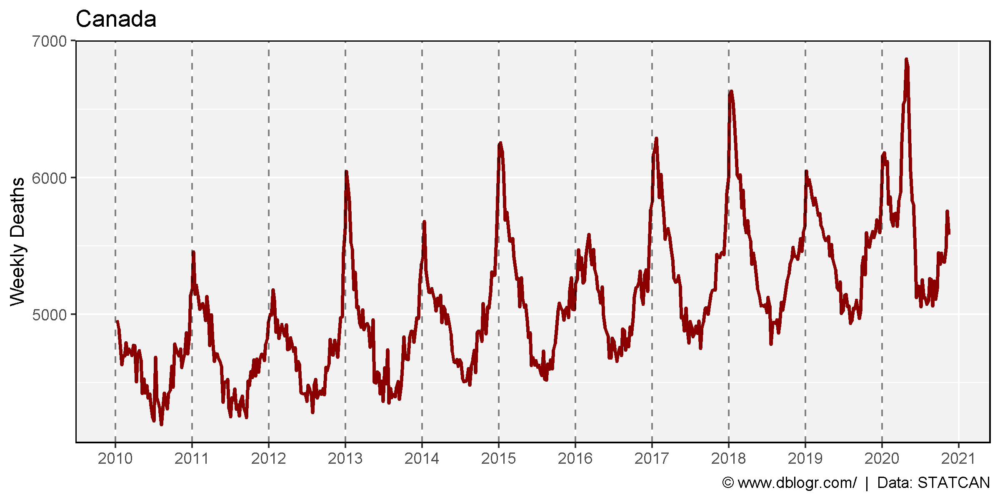
Ontario
mp <- deathPlot1("Ontario")
ggsave("canada_deaths_1_02.png", mp, width = 8, height = 4)
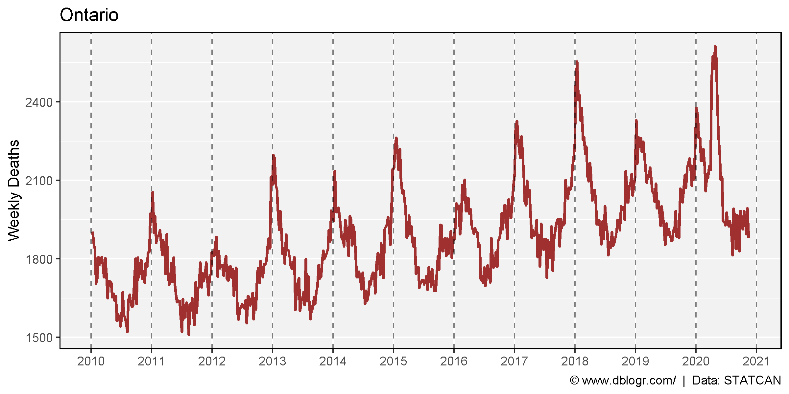
Quebec
mp <- deathPlot1("Quebec")
ggsave("canada_deaths_1_03.png", mp, width = 8, height = 4)
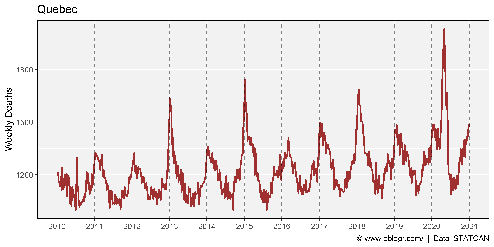
British Columbia
mp <- deathPlot1("British Columbia")
ggsave("canada_deaths_1_04.png", mp, width = 8, height = 4)
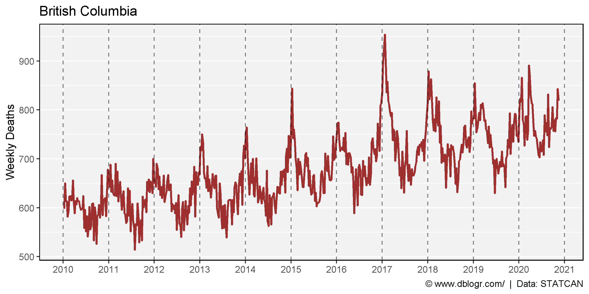
Alberta
mp <- deathPlot1("Alberta")
ggsave("canada_deaths_1_05.png", mp, width = 8, height = 4)
Saskatchewan
mp <- deathPlot1("Saskatchewan")
ggsave("canada_deaths_1_06.png", mp, width = 8, height = 4)
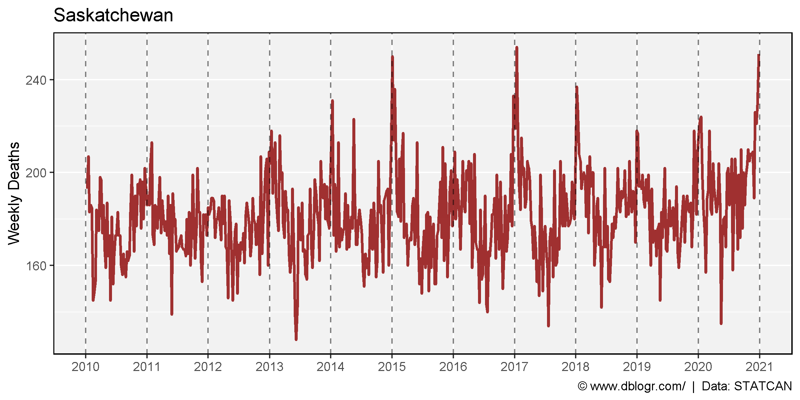
Manitoba
mp <- deathPlot1("Manitoba")
ggsave("canada_deaths_1_07.png", mp, width = 8, height = 4)

Deaths Vs. Previous Years
# Create plotting function
deathPlot2 <- function(areas) {
# Prep data
xx <- d1 %>% filter(Area %in% areas)
# Plot
ggplot(xx, aes(x = JulianDate, y = Value, group = Year, color = YearGroup, alpha = YearGroup)) +
geom_line() +
facet_wrap(Area ~ ., scales = "free_y", ncol = 5) +
scale_color_manual(name = NULL, values = c("darkgreen","darkred")) +
scale_alpha_manual(name = NULL, values = c(0.5,1)) +
theme_agData(legend.position = "bottom") +
labs(y = "Deaths Per Week",
caption = "\xa9 www.dblogr.com/ | Data: STATCAN")
}
Canada
mp <- deathPlot2(areas = areas)
ggsave("canada_deaths_2_01.png", mp, width = 20, height = 8)
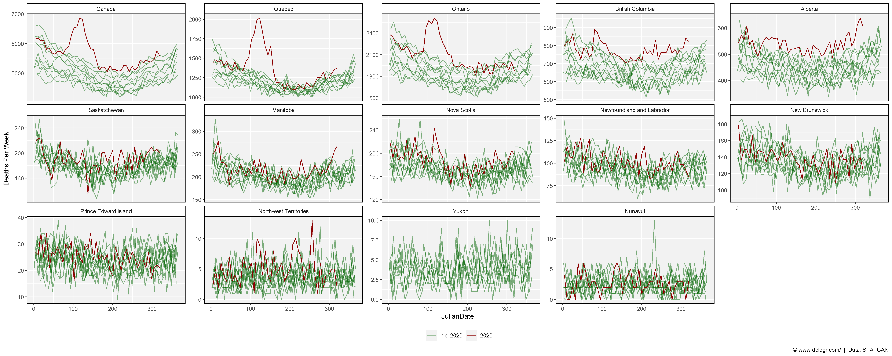
mp <- deathPlot2(areas = "Canada")
ggsave("canada_deaths_2_02.png", mp, width = 6, height = 4)
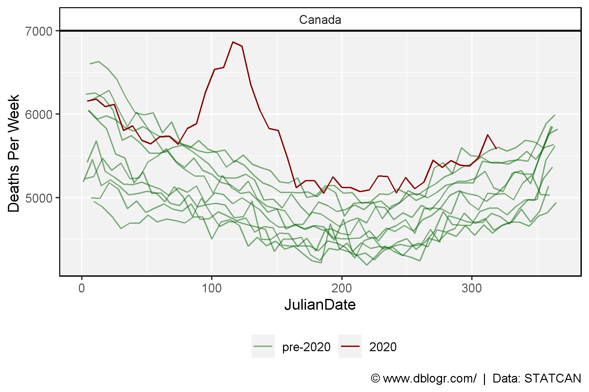
Ontario
mp <- deathPlot2(areas = "Ontario")
ggsave("canada_deaths_2_03.png", mp, width = 6, height = 4)
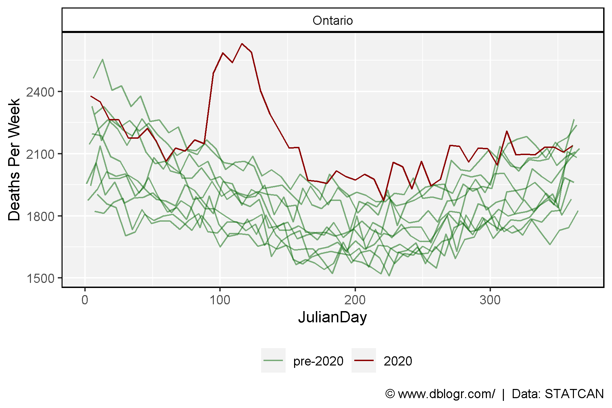
Quebec
mp <- deathPlot2(areas = "Quebec")
ggsave("canada_deaths_2_04.png", mp, width = 6, height = 4)
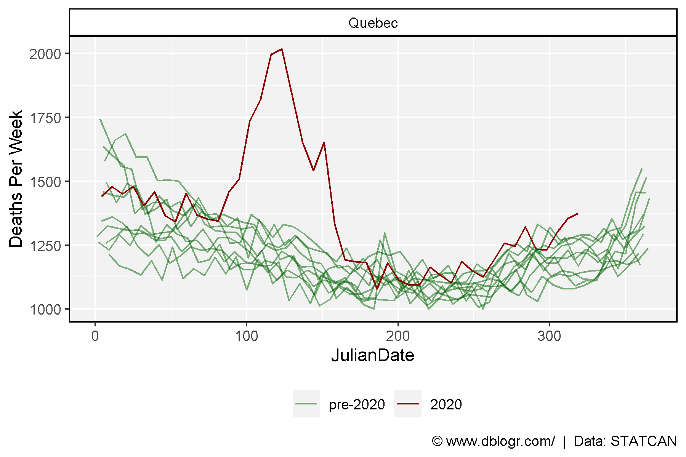
British Columbia
mp <- deathPlot2(areas = "British Columbia")
ggsave("canada_deaths_2_05.png", mp, width = 6, height = 4)
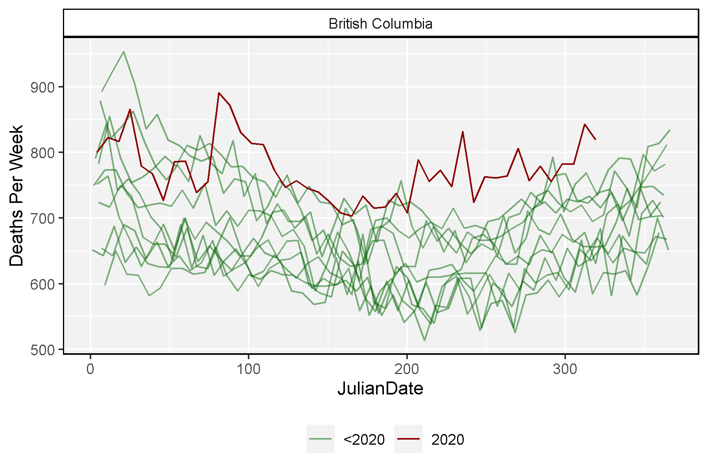
Alberta
mp <- deathPlot2(areas = "Alberta")
ggsave("canada_deaths_2_06.png", mp, width = 6, height = 4)
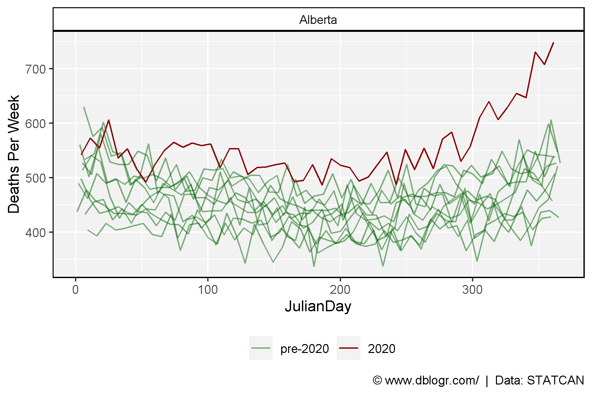
Saskatchewan
mp <- deathPlot2(areas = "Saskatchewan")
ggsave("canada_deaths_2_07.png", mp, width = 6, height = 4)
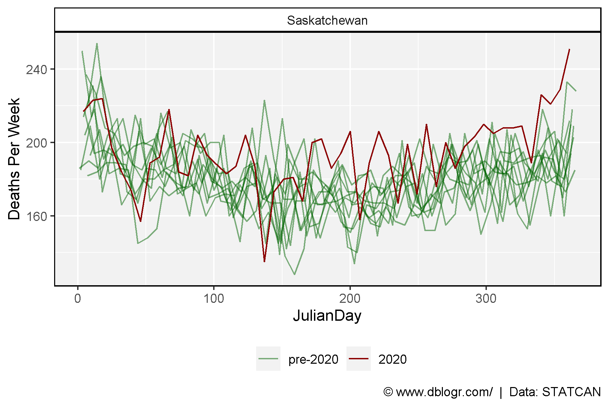
Deaths by Age Group
# Create plotting function
deathPlot3 <- function(areas = "Canada") {
# Prep data
xx <- d2 %>% filter(Area %in% areas, Sex == "Both sexes", Age != "all ages")
# Plot
ggplot(xx, aes(x = JulianDate, y = Value, group = Year, color = YearGroup, alpha = YearGroup)) +
geom_line() +
facet_grid(Area ~ Age, scales = "free_y") +
scale_color_manual(name = NULL, values = c("darkgreen","darkred")) +
scale_alpha_manual(name = NULL, values = c(0.3,1)) +
theme_agData(legend.position = "bottom") +
labs(y = "Deaths Per Week",
caption = "\xa9 www.dblogr.com/ | Data: STATCAN")
}
Canada
mp <- deathPlot3(areas = "Canada")
ggsave("canada_deaths_3_01.png", mp, width = 8, height = 4)
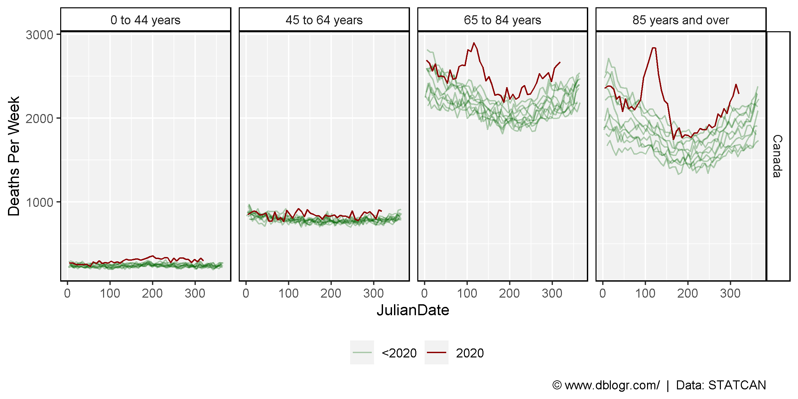
Eastern Canada
areas <- c("Ontario", "Quebec", "Nova Scotia",
"Newfoundland and Labrador", "New Brunswick")
mp <- deathPlot3(areas = areas)
ggsave("canada_deaths_3_02.png", mp, width = 8, height = 8)
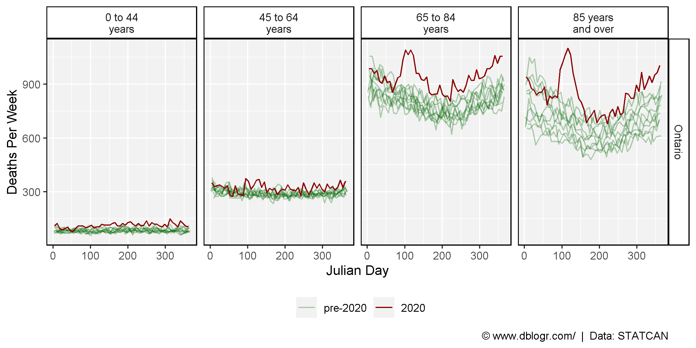
Western Canada
areas <- c("British Columbia", "Alberta", "Saskatchewan", "Manitoba")
mp <- deathPlot3(areas = areas)
ggsave("canada_deaths_3_03.png", mp, width = 8, height = 8)
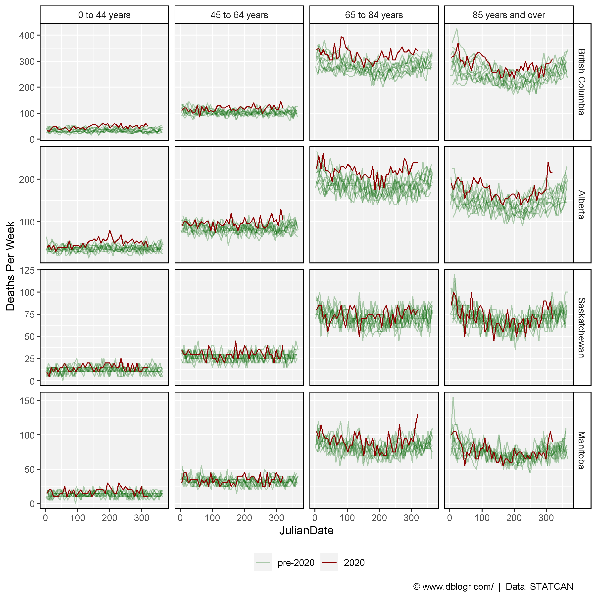
Select Provinces
areas <- c("Ontario", "Quebec", "Saskatchewan",
"Alberta", "British Columbia")
mp <- deathPlot3(areas = areas)
ggsave("canada_deaths_3_04.png", mp, width = 8, height = 8)
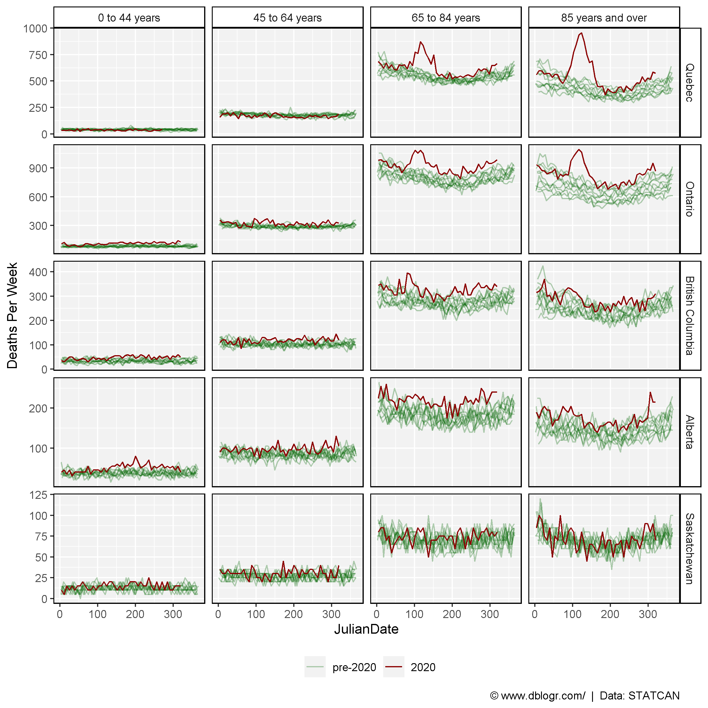
Saskatchewan vs. Quebec
areas <- c("Canada", "Quebec", "Saskatchewan")
mp <- deathPlot3(areas = areas)
ggsave("canada_deaths_3_05.png", mp, width = 8, height = 5)
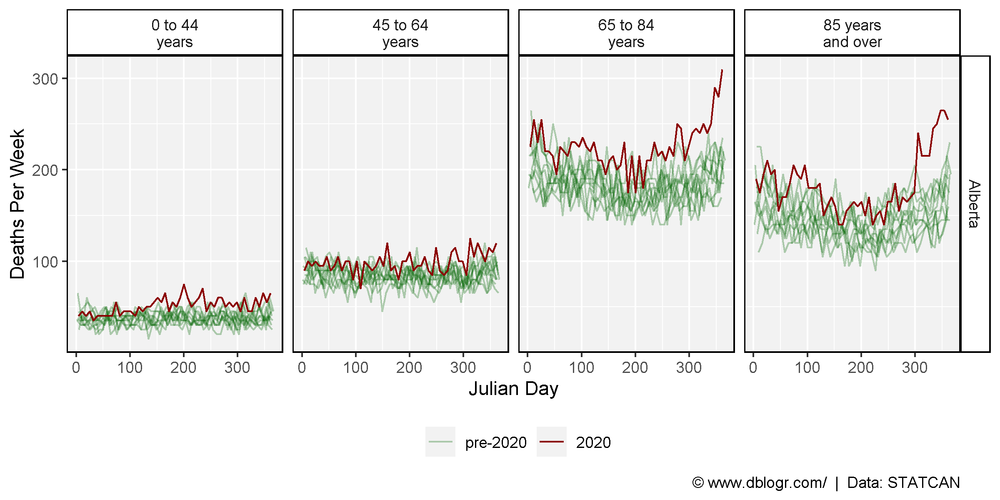
Alberta vs. Ontario
areas <- c("Canada", "Ontario", "Alberta")
mp <- deathPlot3(areas = areas)
ggsave("canada_deaths_3_06.png", mp, width = 8, height = 5)
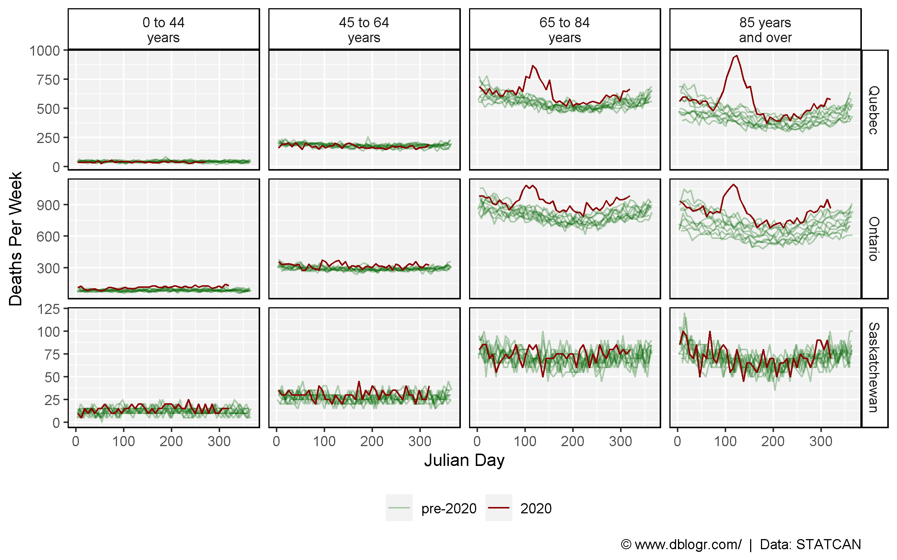
Saskatchewan
mp <- deathPlot3(areas = "Saskatchewan")
ggsave("canada_deaths_3_07.png", mp, width = 8, height = 4)
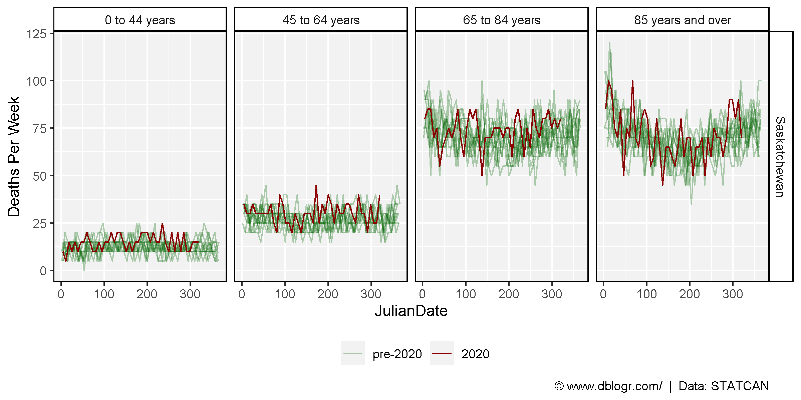
Deaths By Gender
Canada
# Prep data
xx <- d2 %>% filter(Area %in% "Canada", Sex != "Both sexes", Year == 2020)
# Plot
mp <- ggplot(xx, aes(x = JulianDate, y = Value, group = Sex, color = Sex)) +
geom_line() +
facet_grid(Area ~ Age) +
scale_color_manual(name = NULL, values = c("darkred","darkgreen")) +
scale_alpha_manual(name = NULL, values = c(0.5,1)) +
theme_agData(legend.position = "top") +
labs(y = "Deaths Per Week",
caption = "\xa9 www.dblogr.com/ | Data: STATCAN")
ggsave("canada_deaths_4_01.png", mp, width = 8, height = 4)
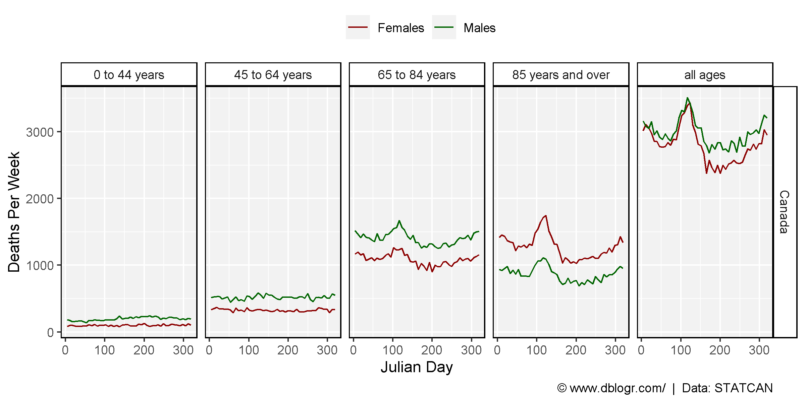
2019 vs 2020
# Create plotting function
deathPlot4 <- function(areas = "Canada", title = areas) {
# Prep data
xx <- d2 %>%
filter(Area %in% areas, Year %in% 2019:2020,
Sex == "Both sexes", Age != "all ages",
!is.na(Value), JulianDate < cutoffJD) %>%
group_by(Age, Year) %>%
summarise(Value = sum(Value)) %>%
ungroup() %>%
mutate(Year = factor(Year, levels = c("2020","2019")),
Age = factor(Age, levels = rev(unique(Age))))
# Plot
ggplot(xx, aes(x = Age, y = Value / 1000, fill = Year)) +
geom_bar(stat = "identity", position = "dodge",
color = "black", alpha = 0.7) +
scale_fill_manual(name = NULL, breaks = c("2019","2020"),
values = c("darkgreen","darkred")) +
coord_flip() +
theme_agData(legend.position = "bottom") +
labs(title = title, y = "Thousand Deaths", x = NULL,
caption = paste0("\xa9 www.dblogr.com/ | Data: STATCAN\n*up to ", cutoffName))
}
Canada
mp <- deathPlot4(areas = "Canada")
ggsave("canada_deaths_5_01.png", mp, width = 6, height = 4)
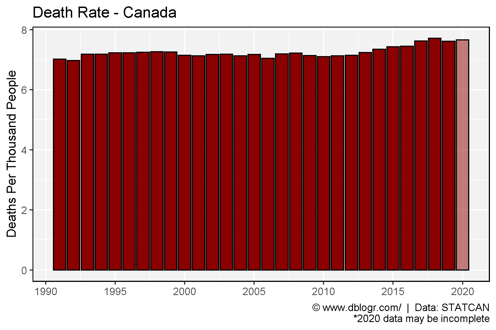
Eastern Canada
areas <- c("Ontario", "Quebec", "Nova Scotia", "Prince Edward Island",
"Newfoundland and Labrador", "New Brunswick")
mp <- deathPlot4(areas = areas, title = "Eastern Canada")
ggsave("canada_deaths_5_02.png", mp, width = 6, height = 4)
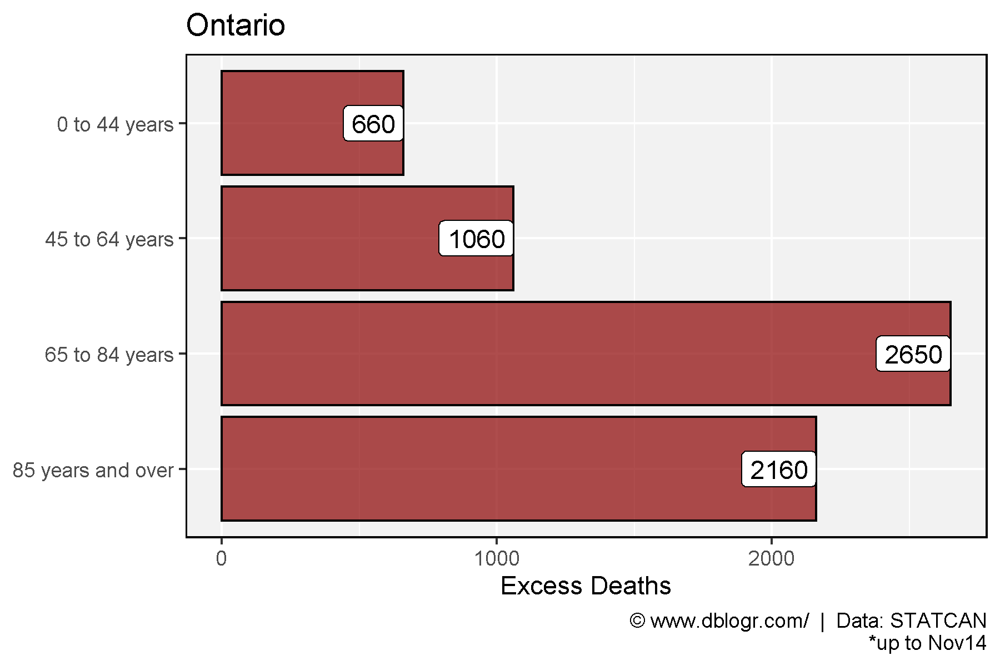
Western Canada
areas <- c("British Columbia", "Alberta", "Saskatchewan", "Manitoba",
"Northwest Territories", "Nunavut ") #"Yukon"
mp <- deathPlot4(areas = areas, title = "Western Canada")
ggsave("canada_deaths_5_03.png", mp, width = 6, height = 4)

Ontario
mp <- deathPlot4(areas = "Ontario")
ggsave("canada_deaths_5_04.png", mp, width = 6, height = 4)
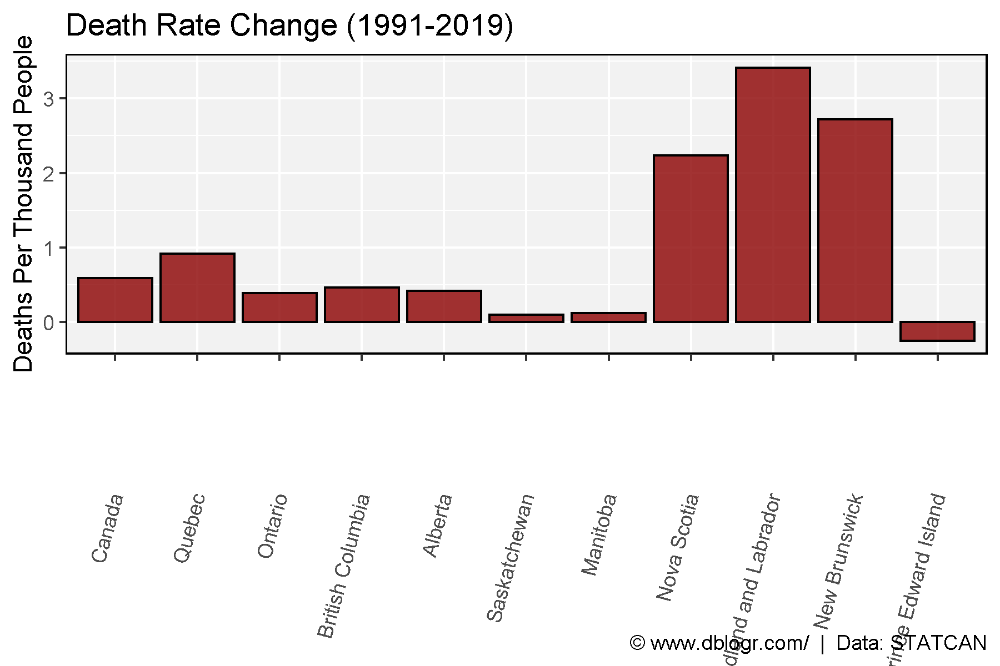
Quebec
mp <- deathPlot4(areas = "Quebec")
ggsave("canada_deaths_5_05.png", mp, width = 6, height = 4)
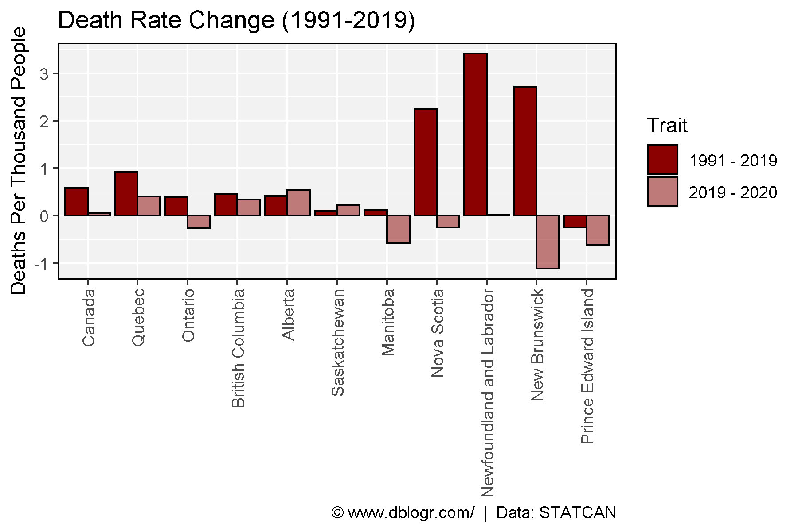
British Columbia
mp <- deathPlot4(areas = "British Columbia")
ggsave("canada_deaths_5_06.png", mp, width = 6, height = 4)
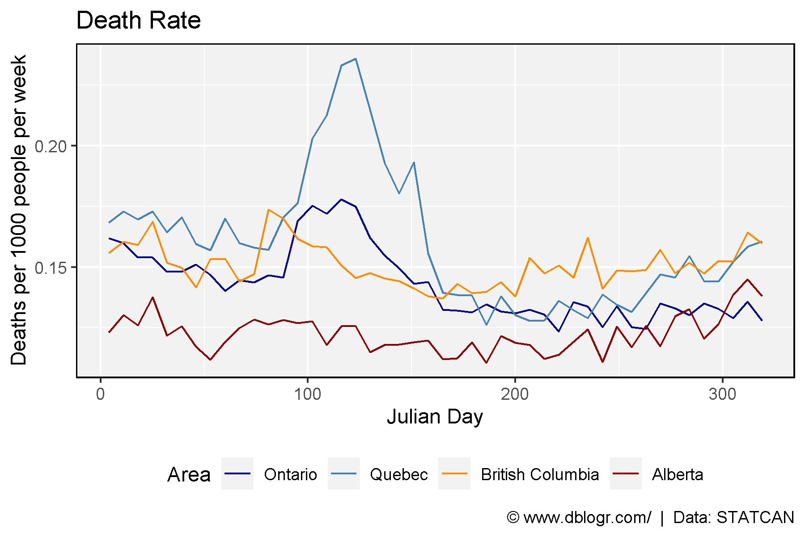
Alberta
mp <- deathPlot4(areas = "Alberta")
ggsave("canada_deaths_5_07.png", mp, width = 6, height = 4)
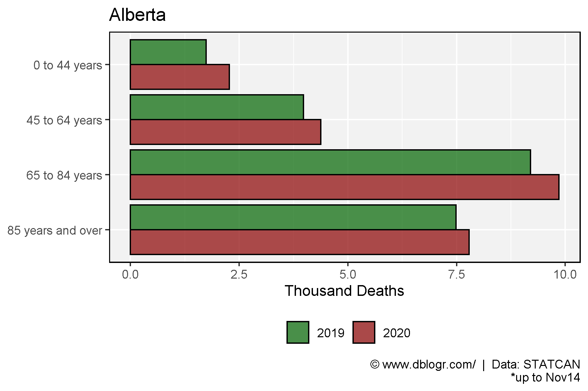
Saskatchewan
mp <- deathPlot4(areas = "Saskatchewan")
ggsave("canada_deaths_5_08.png", mp, width = 6, height = 4)
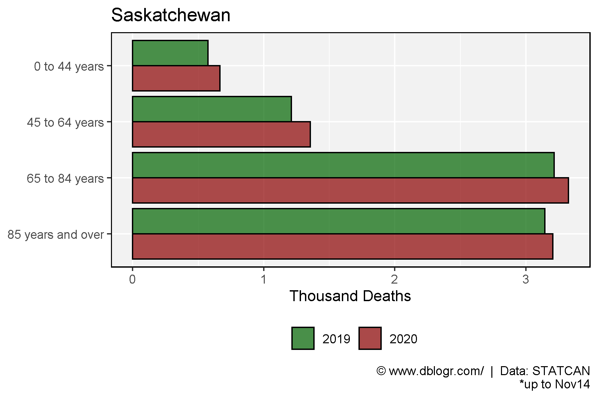
Excess Deaths
# Create plotting function
deathPlot5 <- function(areas = "Canada", title = areas) {
# Prep data
xx <- d2 %>%
filter(Area %in% areas, Year %in% 2019:2020,
Sex == "Both sexes", Age != "all ages",
!is.na(Value), JulianDate < cutoffJD) %>%
group_by(Age, Year) %>%
summarise(Value = sum(Value)) %>%
ungroup() %>%
mutate(Year = factor(Year, levels = c("2020","2019")),
Age = factor(Age, levels = rev(unique(Age)))) %>%
spread(Year, Value) %>%
mutate(Excess = `2020` - `2019`)
# Plot
ggplot(xx, aes(x = Age, y = Excess)) +
geom_bar(stat = "identity", color = "black", fill = "darkred", alpha = 0.7) +
geom_label(aes(label = Excess), hjust = 1) +
coord_flip() +
theme_agData() +
labs(title = title, y = "Excess Deaths", x = NULL,
caption = paste0("\xa9 www.dblogr.com/ | Data: STATCAN\n*up to ", cutoffName))
}
Canada
mp <- deathPlot5(areas = "Canada")
ggsave("canada_deaths_6_01.png", mp, width = 6, height = 4)
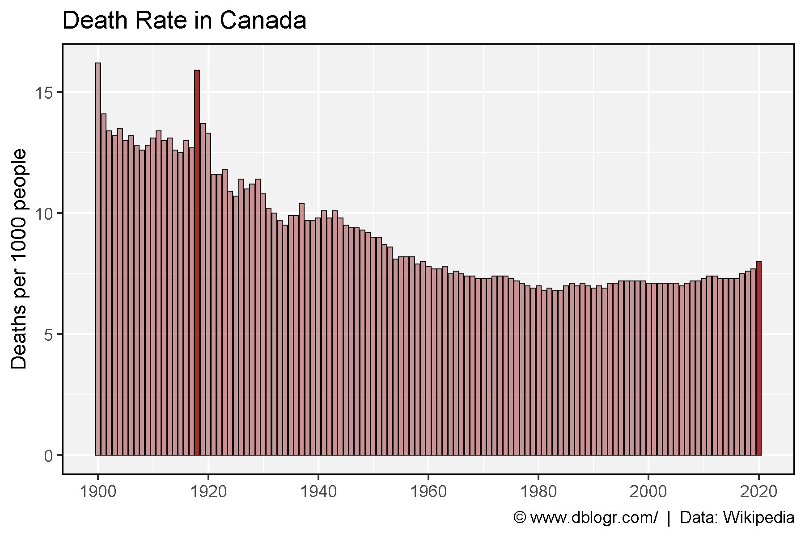
Ontario
mp <- deathPlot5(areas = "Ontario")
ggsave("canada_deaths_6_02.png", mp, width = 6, height = 4)

Quebec
mp <- deathPlot5(areas = "Quebec")
ggsave("canada_deaths_6_03.png", mp, width = 6, height = 4)
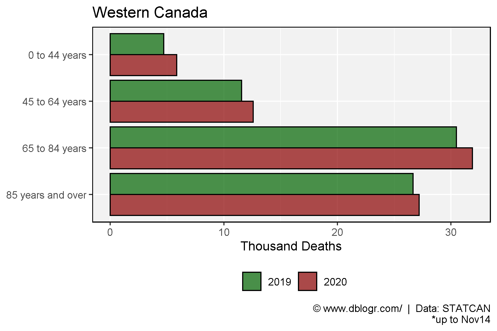
British Columbia
mp <- deathPlot5(areas = "British Columbia")
ggsave("canada_deaths_6_04.png", mp, width = 6, height = 4)
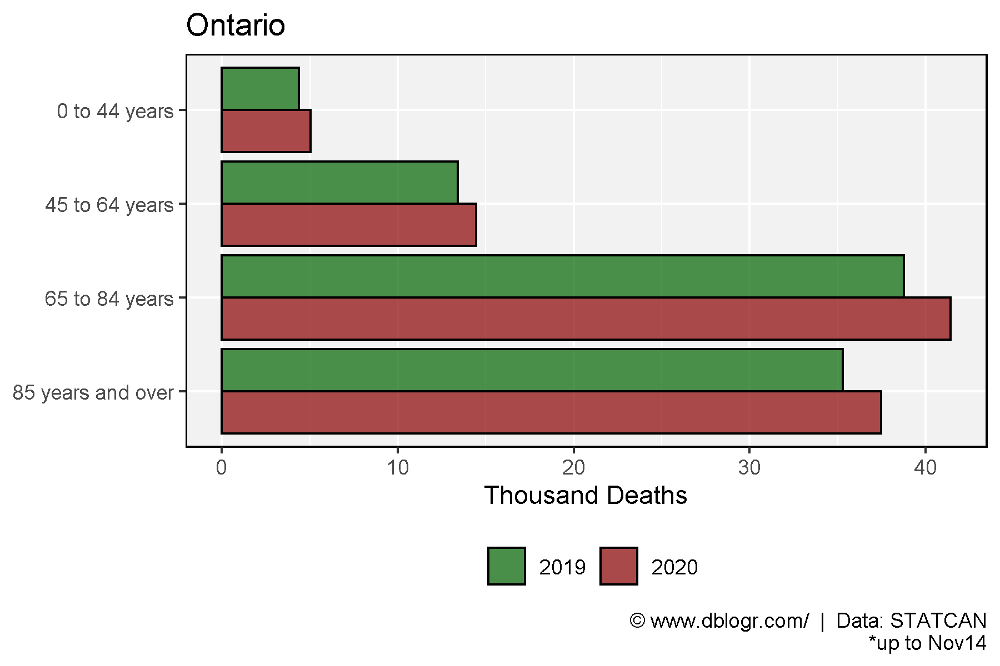
Alberta
mp <- deathPlot5(areas = "Alberta")
ggsave("canada_deaths_6_05.png", mp, width = 6, height = 4)
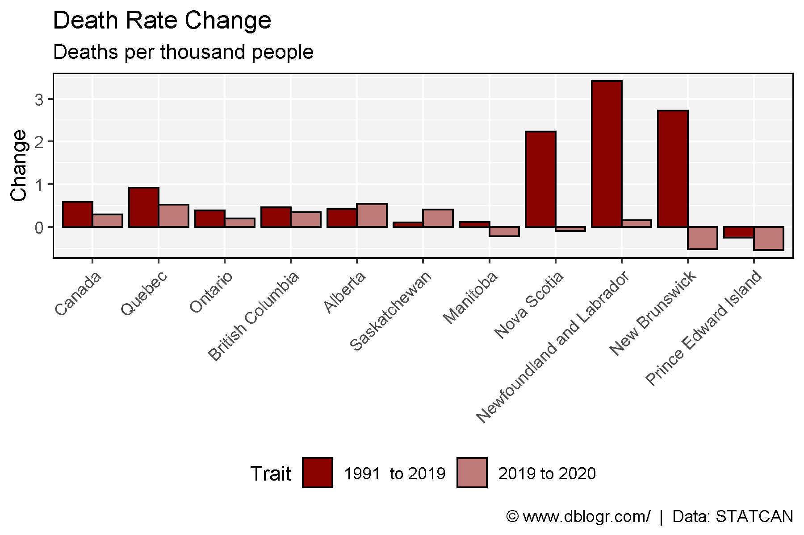
Saskatchewan
mp <- deathPlot5(areas = "Saskatchewan")
ggsave("canada_deaths_6_06.png", mp, width = 6, height = 4)
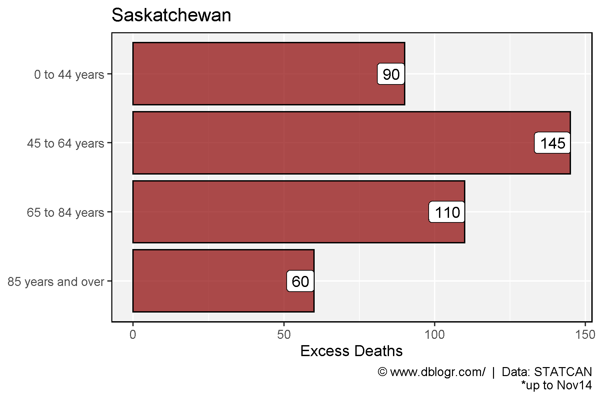
© Derek Michael Wright www.dblogr.com/